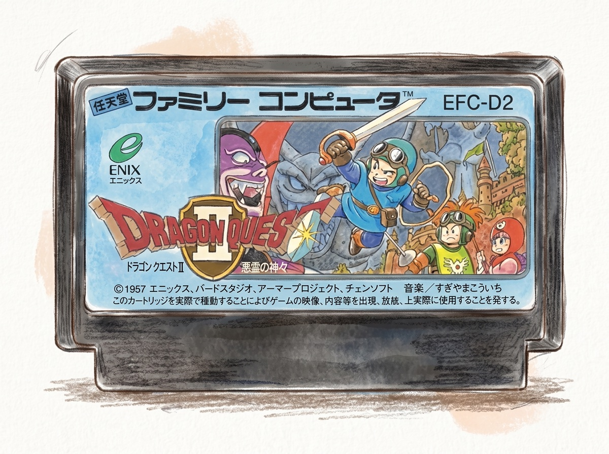
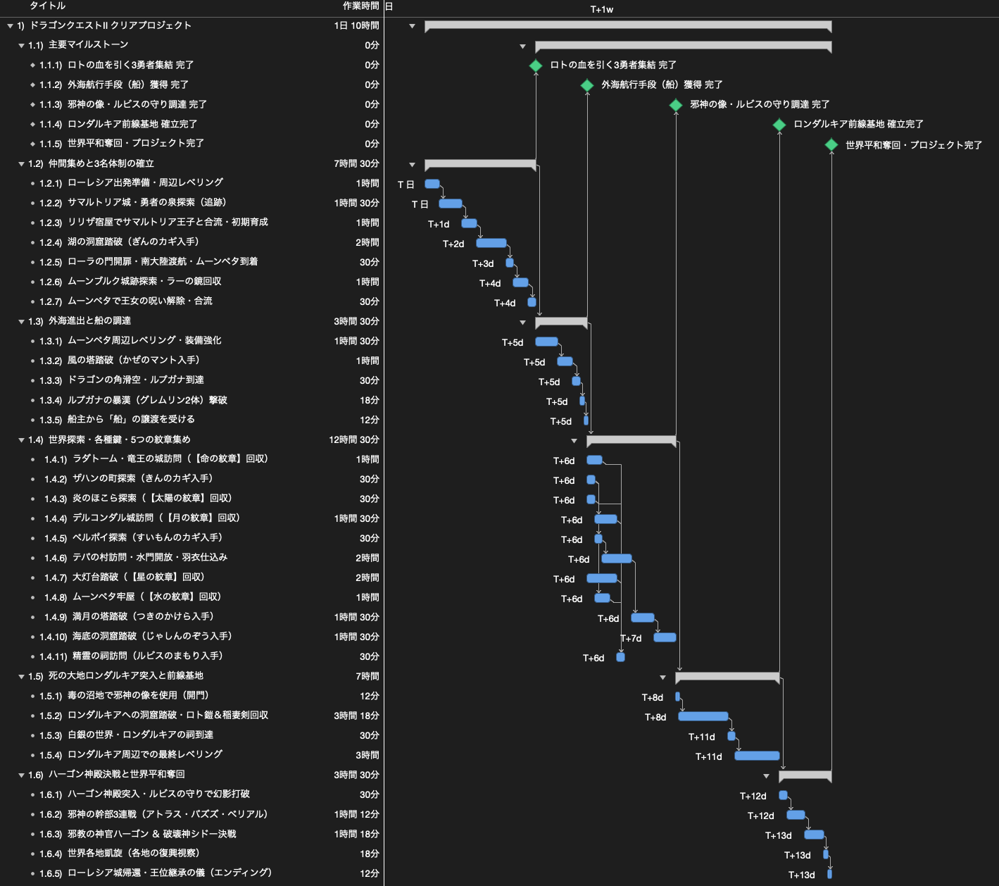
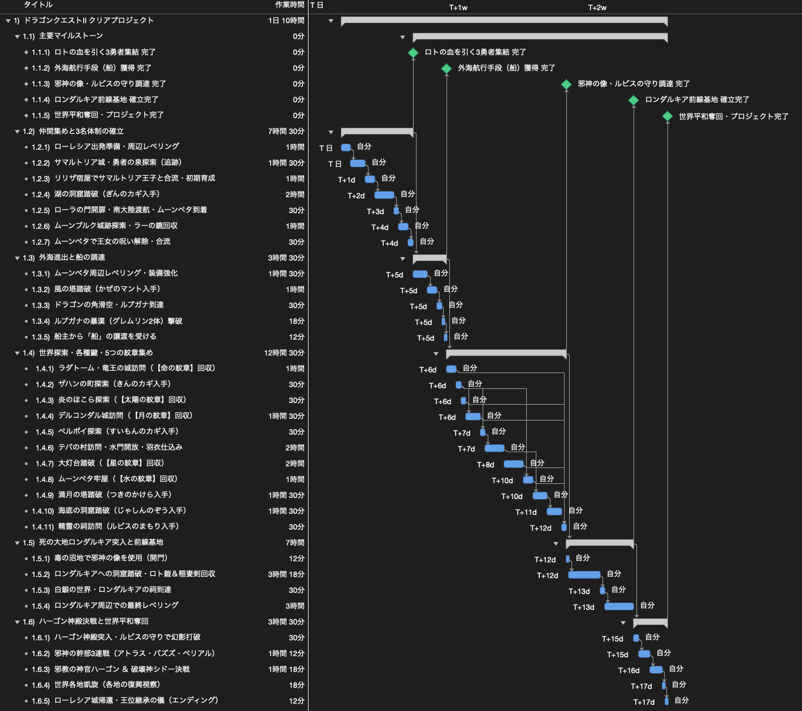

ファミコン版「ドラゴンクエストⅡ」をクリアするWBSを作ってみた
今回は「WBSで覗いてみた」シリーズとして、「ファミコン版『ドラゴンクエストⅡ 悪霊の神々』をクリアするWBS」を作成しました。
1987年にファミリーコンピュータ用ソフトとして発売された本作は、家庭用RPGの草創期を代表する名作のひとつです。私自身、子どもの頃にプレイした際はとにかく怖かった印象が強く残っていますが、大人になりプロジェクトマネジメントを学んだ視点で改めてゲーム全体の構造を俯瞰してみると、リソース調達の先行条件、船の入手を契機とする並行タスク、重要アイテムの合流同期、そして終盤の強固なクリティカルパスなど、極めて緻密な論理設計で構築されていることが分かります。

今回は、裏技やパスワード改ざんは使用せず、適正なレベリングや装備調達、全滅時のリトライを織り込んだ標準的なノーマルプレイを前提として、スタートからエンディング（シドー討伐）までの全工程をWBSに分解し、所要工数や時間構造を検証していきます。
1. ガントチャートと工数の検証
タスクの洗い出しにはAIを活用し、整理した26のタスクと各マイルストーンを、プロジェクト管理ツール（OmniPlan）を用いてガントチャートに展開しました。
標準工数の算出（合計34.0時間）
まずは、純粋なタスク間の先行・後続関係に基づき、各作業の標準所要工数を積み上げたガントチャートです。全タスクの実作業時間を合計すると 34.0時間 となりました。

工数の内訳を見ると、外海進出後の「世界探索・各種鍵・5つの紋章集め」（12.5時間）と、「ロンダルキア突入と前線基地」（7.0時間）の2つで全体の約6割弱を占めています。特にロンダルキアへの洞窟は、無限ループや落とし穴への対策、全滅時の拠点復帰とリトライを考慮し、踏破に3.3時間を割り当てています。また、最終決戦に向けたロンダルキア周辺でのレベリングにも3.0時間の工数を確保しています。
リソースの割り当てと完遂期間
算出した総工数34.0時間を、私の活動スタイルに当てはめたスケジュールを検証しました。
パターン1：社会人の余暇プレイ（平日夜1.5h／休日3.5h）
平日の夜に1.5時間、土日にそれぞれ3.5時間を充てる、無理のない社会人の余暇活用ペース（週14.5時間稼働）を想定した場合のスケジュールです。

この場合、スタートからエンディングまでの全体所要期間は 約17日間（約2週間半） となります。第1週で3名体制確立から船の入手・初期探索を進め、第2週で各地の紋章回収とロンダルキアへの洞窟突破・拠点設営まで到達し、第3週前半で最終決戦を終えてエンディングを迎えるスケジュール感です。
パターン2：専業・フルタイムプレイ（全日8時間集中）
長期休暇等を利用し、一般的な勤務時間と同様に1日8時間（9:00〜17:00等）集中して進めた場合のスケジュールです。
この場合、実働4.25日、日数にして 約5日間 で全工程を完遂できる見通しとなります。
終わりに
今回は、ファミコン版『ドラゴンクエストⅡ 悪霊の神々』を題材に、クリアまでの工程をWBSとして分解し、タスクの依存関係と所要工数を検証しました。
WBSを通してゲームの攻略手順を分解してみることで、約34時間の所要工数やクリアまでの現実的なスケジュール感、そしてタスク間の依存関係が明確になりました。
なお、プロジェクト計画の基礎となるWBSの作り方や平準化の考え方について詳しく知りたい方は、「WBSの勘所」や「ガントチャートの決め手は平準化」もぜひ合わせてご覧ください。
最後までお読みいただきありがとうございました。